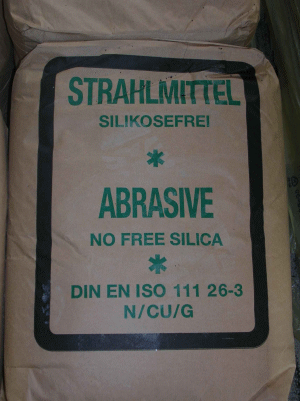

In der Vergangenheit wurde häufig Quarzsand als Strahlmittel verwendet. Dies führte zu einer hohen Gefährdung der Beschäftigten (Silikose). Heute werden quarzfreie Strahlmittel verwendet.
Strahlen mit quarzhaltigen Strahlmitteln ist verboten.